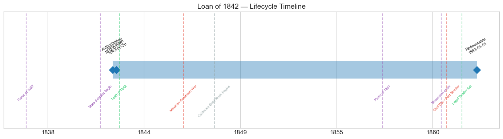
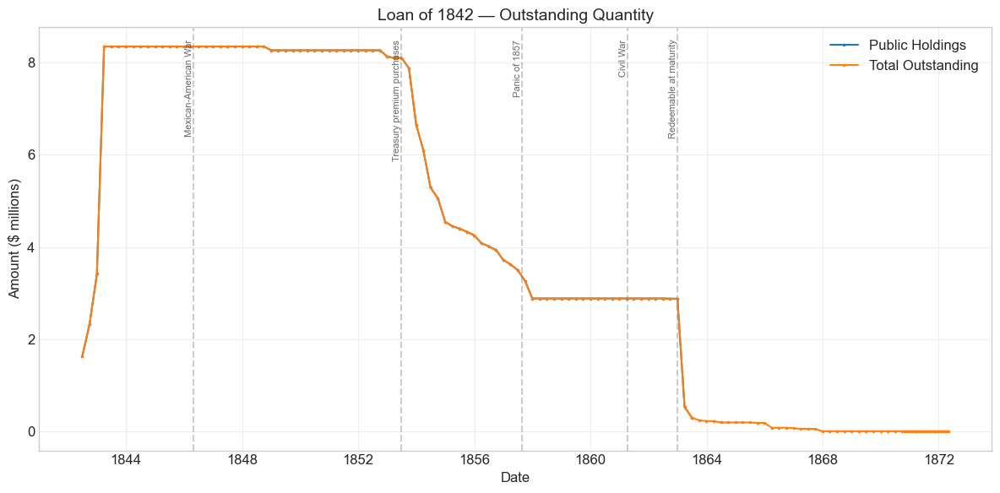
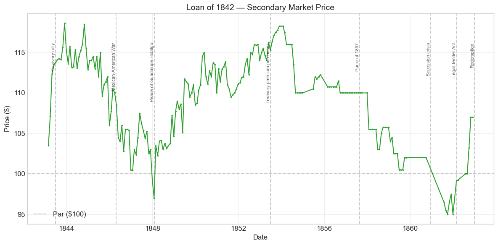
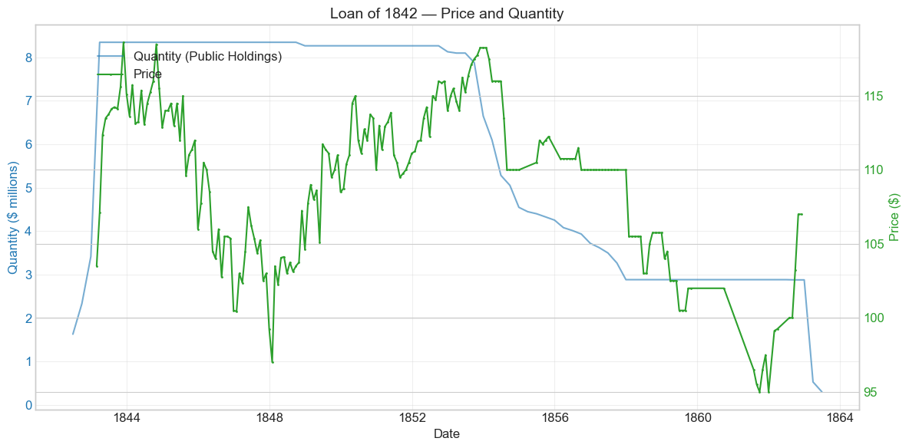
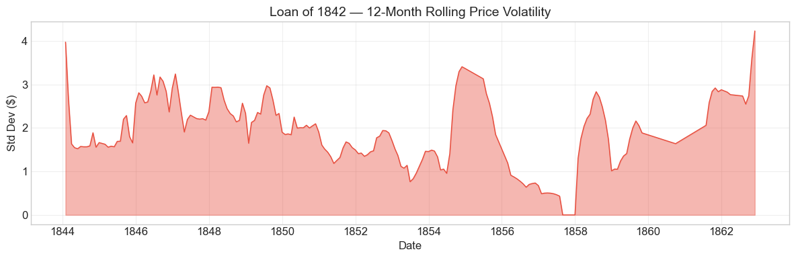

Bond Biography: Loan of 1842#
The Bond That Rebuilt American Credit#
An enhanced chapter from the Hall-Payne-Sargent US Federal Bond Database (2,857 issues, 1776–1960)
Bond ID (L1): 20083 | Category: Interest Bearing > Marketable > Long Term Bond
import pandas as pd
import numpy as np
import matplotlib.pyplot as plt
import matplotlib.patches as mpatches
import datetime
import warnings
warnings.filterwarnings('ignore')
plt.style.use('seaborn-v0_8-whitegrid')
plt.rcParams.update({'figure.figsize': (12, 6), 'font.size': 12,
'axes.titlesize': 14, 'axes.labelsize': 12})
# Load the bond database
store = pd.HDFStore('../data/BondDF.h5', mode='r')
BondList = store['BondList']
BondQuant = store['BondQuant']
BondPrice = store['BondPrice']
store.close()
BondQuant_T = BondQuant.transpose()
BondPrice_T = BondPrice.transpose()
bond_id = 20083
print(f'Loaded data for: Loan of 1842 (ID: 20083)')
/Users/thomassargent/anaconda3/lib/python3.9/site-packages/pandas/core/arrays/masked.py:60: UserWarning: Pandas requires version '1.3.6' or newer of 'bottleneck' (version '1.3.5' currently installed).
from pandas.core import (
Loaded data for: Loan of 1842 (ID: 20083)
Overview#
The Loan of 1842 was authorized by the Act of April 15, 1842, first issued on June 30, 1842, and carried a 6.0% coupon payable semi-annually in coin. It was a twenty-year stock, redeemable after the beginning of 1863. During its lifetime on the secondary market, the bond’s average price was $109.22, ranging from $95.00 to $118.62 (based on 205 monthly observations from February 1843 to November 1862). Peak outstanding reached $8.34 million on March 31, 1843.
Behind those tidy statistics lies one of the most humiliating episodes in the history of American public credit — and one of its most complete recoveries.
In January 1835 the United States had done something no major nation had ever done: it paid off essentially its entire national debt. Andrew Jackson celebrated the extinction of the debt as a moral triumph. Barely two years later, the Panic of May 1837 shattered the banking system, and the long depression that followed — deepening again after 1839 — collapsed the customs and land-sale revenues on which the federal government lived. The Treasury ran deficits year after year from 1837 through 1843, papering over the gap first with short-dated Treasury notes and then, reluctantly, with funded loans. The debt-free republic was borrowing again.
It was borrowing, moreover, at the worst possible moment. In 1841–42, eight states and the Territory of Florida stopped paying interest on their debts, and several ultimately repudiated obligations outright. European investors, who held a large share of those state bonds, did not carefully distinguish between the credit of Pennsylvania or Mississippi and the credit of the United States: to many in London and Paris, “American” credit was simply ruined. When the Tyler administration’s Treasury tried to place its new loan, it found the door to European capital markets closed — a remark widely attributed to Baron James de Rothschild, and reported in McGrane’s classic study of the episode, had it that the head of the finances of Europe told an American agent that the United States “cannot borrow a dollar.” Whatever the exact words, the substance was true: in 1842 the government of the United States, which had never itself missed a payment, could not sell its 6 per cent bonds abroad at any acceptable price.
The Loan of 1842 is therefore the pivot of a larger story. It marks the low point of federal credit between Hamilton’s funding of 1790 and the Civil War, and its subsequent climb — from a difficult sale at 97½ to quotations above 118 within eighteen months — traces the restoration of the government’s good name. It went on to trade alongside the Mexican War sixes, to be bought back at handsome premiums out of the surpluses of the 1850s, and to be redeemed at maturity in 1863 in the middle of a far greater war. Few securities in the database compress so much of antebellum fiscal history into a single price series.
Historical Context#
The following major events occurred during this bond’s lifetime:
Date |
Event |
Category |
|---|---|---|
1837-05-10 to 1843-12-31 |
Panic of 1837 and ensuing depression |
Crisis |
1841–1842 |
Eight states and Florida Territory suspend debt payments |
Crisis |
1842-08-30 |
Tariff of 1842 restores customs revenue |
Legislation |
1846-04-25 to 1848-02-02 |
Mexican-American War |
War |
1848-01-24 |
California Gold Rush begins |
Other |
1857-08-24 to 1858-12-31 |
Panic of 1857 |
Crisis |
1860-11 to 1861-04 |
Secession crisis |
Crisis |
1861-04-12 to 1865-04-09 |
Civil War |
War |
1862-02-25 |
Legal Tender Act (greenbacks) |
Legislation |
1863 (from Jan 1) |
Bond redeemable; bulk retired |
Other |
The fiscal collapse after 1837#
The Panic of 1837 and the renewed contraction after 1839 destroyed the two pillars of federal revenue. Customs receipts fell with the collapse of imports, and public land sales — which had reached extraordinary, speculative heights in 1836 — dwindled to a trickle. From 1837 through 1843 the government ran a nearly unbroken string of deficits. It met them at first by issuing short-term Treasury notes (an expedient revived from the War of 1812), then by the funded Loan of 1841 and, when that proved insufficient and hard to place, the Loan of 1842. By the time revenue recovered, a nation that had been debt-free in 1835 owed on the order of thirty million dollars.
The state-default crisis and the stain on federal credit#
The deeper problem was reputational. During the boom of the 1830s the states had borrowed lavishly — well over $150 million in aggregate — for canals, railroads, and banks, much of it sold to British and Continental investors. When the depression came, the projects failed and the revenues never materialized. In 1841–42 Pennsylvania, Maryland, Indiana, Illinois, Michigan, Arkansas, Louisiana, and Mississippi, together with the Territory of Florida, suspended interest payments; Mississippi, Florida, and eventually others repudiated portions of their debts outright. European bondholders were furious, and their fury fell on all American borrowers indiscriminately. Sydney Smith’s mockery of Pennsylvania in the Edinburgh Review became famous; the great houses of London, Paris, and Amsterdam — Barings and Rothschilds included — refused to touch a new United States loan. Agents sent to Europe to sound out the market in 1842 returned empty-handed. There was serious discussion in Congress of the opposite remedy — federal assumption of the state debts, on the Hamiltonian precedent of 1790 — but assumption was rejected, as was extended reliance on the 1841 policy of distributing land-sale proceeds to the states, which the deficit soon made untenable. The federal government would neither pay the states’ debts nor be forgiven for them.
The difficult birth of the loan, and the recovery#
The Act of April 15, 1842 authorized new twenty-year borrowing at up to 6 per cent, extending the shorter-term authority of 1841. Subscriptions came in slowly and in fragments: the quantity series below shows only $1.6 million placed by June 1842 and $3.4 million by year-end. Congress relaxed the terms, permitting sale below par, and the price-sold figure of 97½ in the database records the concession the Treasury had to make — the United States, at peace, paying a discount on a 6 per cent coin bond. The turn came with the Tariff of August 1842, which restored customs revenue, and with the general revival of business in 1843. By March 1843 the full $8.34 million was out; by November 1843 the bond was quoted at 118⅝. Several defaulting states (Pennsylvania and Maryland among them) later resumed payment, and the worst of the stigma faded, though the repudiations of Mississippi and Florida were never made good.
The Mexican War, the golden 1850s, and the end#
The bond’s later life is read in detail in the price sections below: a sag toward par during the Mexican War of 1846–48, when the Treasury flooded the market with new 6 per cent loans; a long premium plateau in the prosperous early 1850s, when Treasury surpluses were used to buy bonds back above 116; thinner quotations and a step down after the Panic of 1857; a slide below par in the secession crisis and the first year of the Civil War; and finally redemption at maturity in 1863, paid off by a government then borrowing hundreds of millions for a war whose scale dwarfed everything in this bond’s lifetime.
# Bond Lifecycle Timeline
fig, ax = plt.subplots(figsize=(14, 4))
# Key dates
dates = [('Authorization', '1842-04-15'), ('First Issue', '1842-06-30'), ('Redeemable', '1863-01-01')]
events = [('Panic of 1837', '1837-05-10', 'crisis'), ('State defaults begin', '1841-08-01', 'crisis'), ('Tariff of 1842', '1842-08-30', 'legislation'), ('Mexican-American War', '1846-04-25', 'war'), ('California Gold Rush begins', '1848-01-24', 'other'), ('Panic of 1857', '1857-08-24', 'crisis'), ('Secession crisis', '1860-12-20', 'crisis'), ('Civil War / Fort Sumter', '1861-04-12', 'war'), ('Legal Tender Act', '1862-02-25', 'legislation')]
import matplotlib.dates as mdates
from datetime import datetime
# Plot bond lifetime bar
d0 = datetime.strptime(dates[0][1], '%Y-%m-%d')
d1 = datetime.strptime(dates[-1][1], '%Y-%m-%d')
ax.barh(0, (d1 - d0).days, left=mdates.date2num(d0), height=0.3,
color='#1f77b4', alpha=0.4, label='Bond Lifetime')
# Mark key dates
for label, date_str in dates:
d = datetime.strptime(date_str, '%Y-%m-%d')
ax.plot(mdates.date2num(d), 0, 'D', color='#1f77b4', markersize=10)
ax.annotate(f'{label}\n{date_str}', (mdates.date2num(d), 0.25),
ha='center', va='bottom', fontsize=8, rotation=30)
# Mark historical events
colors = {'war': '#e74c3c', 'crisis': '#9b59b6', 'legislation': '#2ecc71', 'other': '#95a5a6', 'monetary': '#f39c12'}
for name, date_str, cat in events:
d = datetime.strptime(date_str, '%Y-%m-%d')
ax.axvline(mdates.date2num(d), color=colors.get(cat, 'gray'), alpha=0.5, linestyle='--')
ax.annotate(name, (mdates.date2num(d), -0.25), ha='center', va='top',
fontsize=7, rotation=45, color=colors.get(cat, 'gray'))
ax.set_yticks([])
ax.xaxis.set_major_formatter(mdates.DateFormatter('%Y'))
ax.set_title('Loan of 1842 — Lifecycle Timeline')
ax.set_ylim(-1, 1)
plt.tight_layout()
plt.show()

Bond Features#
Feature |
Detail |
|---|---|
Name |
Loan of 1842 |
Authorizing Act |
April 15, 1842 |
Authorization Date |
April 15, 1842 |
First Issue Date |
June 30, 1842 |
Term |
20 years |
Redeemable After |
January 1, 1863 |
Coupon Rate |
6.0% |
Payment Frequency |
Semi-annual (January and July) |
Callable |
No |
Payable in Coin |
Yes |
Amount Placed |
~$8.34 million (peak outstanding, March 1843) |
Price Sold |
0.975 (about 97½ per $100 of face value) |
Two features deserve emphasis. First, the twenty-year term was itself a statement: the Loan of 1841 had been a short-dated stopgap, and the 1842 act’s long maturity acknowledged that the deficit was not a passing embarrassment but a debt that would have to be carried across a generation. Second, the sale below par — recorded in the database as 0.975 — was a concession Congress had originally resisted. A 6 per cent coin bond of the United States selling at a discount in peacetime measures precisely how much the state-default crisis had cost the federal government’s reputation, since the same government’s securities would spend most of the 1850s above 110.
# Display full bond features from database
row = BondList.loc[20083]
display_cols = [
"Treasury's Name Of Issue", 'Authorizing Act', 'Term Of Loan',
'First Issue Date', 'First Redemption Date', 'Final Redemption Date',
'Coupon Rate', 'Coupons Per Year', 'Callable', 'Coin',
'Authorized Amount', 'Price Sold'
]
print('Bond Features from Database:')
print('=' * 55)
for col in display_cols:
if col in row.index:
print(f' {col:<30} {row[col]}')
Bond Features from Database:
=======================================================
Treasury's Name Of Issue Loan of 1842
Authorizing Act April 15, 1842
Term Of Loan 20 years
First Issue Date 1842-06-30 00:00:00
First Redemption Date NaT
Final Redemption Date NaT
Coupon Rate 6.0
Coupons Per Year 2.0
Callable 0.0
Coin 1.0
Authorized Amount nan
Price Sold 0.975
Bond Quantity Over Time#
The bond’s outstanding quantity peaked at $8.34 million on March 31, 1843. Data spans from June 30, 1842 to the post-redemption residuals of the late 1860s (quarterly, then monthly observations).
# Bond quantity over time
fig, ax = plt.subplots(figsize=(12, 6))
for stype in ['Public Holdings', 'Total Outstanding']:
try:
s = BondQuant_T.loc[(20083, stype)]
s = s[s.notna()]
if len(s) > 0:
ax.plot(s.index, s.values / 1e6, marker='.', markersize=3, linewidth=1.5, label=stype)
except KeyError:
pass
ax.set_title('Loan of 1842 — Outstanding Quantity')
ax.set_xlabel('Date')
ax.set_ylabel('Amount ($ millions)')
ax.legend()
ax.grid(True, alpha=0.3)
events = {'1846-04-25': 'Mexican-American War', '1853-06-30': 'Treasury premium purchases', '1857-08-24': 'Panic of 1857', '1861-04-12': 'Civil War', '1863-01-01': 'Redeemable at maturity'}
for date_str, label in events.items():
d = pd.Timestamp(date_str)
ax.axvline(d, color='gray', alpha=0.4, linestyle='--')
ax.text(d, ax.get_ylim()[1]*0.97, label, rotation=90, va='top', ha='right', fontsize=8, alpha=0.7)
plt.tight_layout()
plt.show()

Quantity Analysis#
The quantity series tells the story of the loan in four movements.
The struggle to sell (1842–43). Only $1.63 million was out by June 1842 and $3.42 million by December — a crawl that reflects the hostile market described above. The jump to the full $8.34 million by March 1843 came only after Congress permitted sale below par and after the Tariff of 1842 and reviving trade made federal paper saleable again. A loan that a decade later would have been absorbed in a morning took the better part of a year to place.
The long plateau (1843–1852). The full amount then sat essentially untouched for a decade, through the Mexican War — when the Treasury was adding new debt, not retiring old — with only a token $80,700 reduction at the end of 1848.
Premium purchases out of surplus (1853–1857). From 1853 the balance falls steadily: to $6.6 million by the end of 1853, $4.5 million by the end of 1854, and $2.88 million by the end of 1857. This is the mirror image of the 1842 humiliation. Tariff revenues swollen by the prosperity (and gold) of the early 1850s gave the Treasury persistent surpluses, and Secretaries Corwin and, especially, James Guthrie used them to buy government bonds in the open market at substantial premiums — this bond was then quoted in the teens above par — both to reduce the debt and to return idle Treasury cash to a money market that complained of its absorption. The purchases stop abruptly at the end of 1857: the Panic of 1857 collapsed customs revenue, the surpluses vanished, and the balance froze at $2.88 million for five years while the Treasury of 1858–60 went back to borrowing.
Redemption at maturity (1863). The bond became redeemable on January 1, 1863, and the ledger shows the principal paid off in the first half of that year — an 82% drop in the March 1863 quarter and most of the rest by June. The timing is remarkable: in the middle of the Civil War, while borrowing on an unprecedented scale through five-twenties and legal-tender notes, the Treasury retired this twenty-year relic of the 1842 crisis on schedule. The small residual balances that linger in the “Total Outstanding” series into the late 1860s (ultimately a mere $6,000) represent certificates never presented for payment — a common tail in nineteenth-century loan accounts, not a default.
Secondary Market Prices#
Overall Statistics (1843-02-28 to 1862-11-30): Mean $109.22, Range $95.00–$118.62, Std Dev $5.37, 205 observations.
By Period:
Period |
Approx. Range |
Character |
|---|---|---|
1843–1845 |
103½ → 118⅝, settling 112–116 |
Recovery rally; federal credit restored |
1846–1848 (Mexican War) |
97–108, trough 97.0 (Jan 1848) |
War uncertainty and heavy new 6% supply |
1849–1853 |
105–118¼ |
Peace, gold, surpluses; premium climbs |
1854–1857 |
~110, increasingly flat |
Premium purchases; thinning float and quotations |
1858–1860 |
100½–105¾ |
Post-panic step down; sparse quotes |
1861–1862 |
95–107 |
Secession-crisis sag, then recovery in a depreciating currency |
The first quotation in the database, 103½ in February 1843, already stands above both par and the 97½ issue price — the market had turned before the loan was even fully placed. The run to 118⅝ by November 1843 is one of the sharpest sustained rallies of any peacetime bond in the antebellum database: a price move of roughly twenty points in under two years, driven not by any change in the bond’s terms but by the resurrection of the issuer’s reputation and the general collapse of yields as idle capital, burned by state bonds, crowded into the one American public credit that had never failed.
# Annotated price chart
fig, ax = plt.subplots(figsize=(12, 6))
s = BondPrice_T.loc[(20083, 'Average')]
s = pd.to_numeric(s, errors='coerce').dropna()
if len(s) > 0:
ax.plot(s.index, s.values, marker='.', markersize=3, linewidth=1.5, color='#2ca02c')
ax.axhline(100, color='black', alpha=0.2, linestyle='--', label='Par ($100)')
ax.set_title('Loan of 1842 — Secondary Market Price')
ax.set_xlabel('Date')
ax.set_ylabel('Price ($)')
ax.legend()
ax.grid(True, alpha=0.3)
events = {'1843-06-30': 'Recovery rally', '1846-04-25': 'Mexican-American War', '1848-02-02': 'Peace of Guadalupe Hidalgo', '1853-06-30': 'Treasury premium purchases', '1857-08-24': 'Panic of 1857', '1860-12-20': 'Secession crisis', '1862-02-25': 'Legal Tender Act', '1863-01-01': 'Redemption'}
for date_str, label in events.items():
d = pd.Timestamp(date_str)
ax.axvline(d, color='gray', alpha=0.4, linestyle='--')
ax.text(d, ax.get_ylim()[1]*0.97, label, rotation=90, va='top', ha='right', fontsize=8, alpha=0.7)
plt.tight_layout()
plt.show()

# Price and Quantity — dual-axis chart
fig, ax1 = plt.subplots(figsize=(12, 6))
# Quantity (left axis)
for stype in ['Public Holdings', 'Total Outstanding']:
try:
q = BondQuant_T.loc[(20083, stype)]
q = q[q.notna()]
if len(q) > 0:
ax1.plot(q.index, q.values / 1e6, color='#1f77b4', alpha=0.6, label=f'Quantity ({stype})')
break
except KeyError:
pass
ax1.set_xlabel('Date')
ax1.set_ylabel('Quantity ($ millions)', color='#1f77b4')
ax1.tick_params(axis='y', labelcolor='#1f77b4')
# Price (right axis)
ax2 = ax1.twinx()
p = BondPrice_T.loc[(20083, 'Average')]
p = pd.to_numeric(p, errors='coerce').dropna()
if len(p) > 0:
ax2.plot(p.index, p.values, color='#2ca02c', marker='.', markersize=2, label='Price')
ax2.set_ylabel('Price ($)', color='#2ca02c')
ax2.tick_params(axis='y', labelcolor='#2ca02c')
ax1.set_title('Loan of 1842 — Price and Quantity')
ax1.grid(True, alpha=0.3)
fig.legend(loc='upper left', bbox_to_anchor=(0.1, 0.9))
plt.tight_layout()
plt.show()

Detected Price/Quantity Events#
The following significant movements were auto-detected in the data, with causal interpretation:
Date |
Type |
Change |
Interpretation |
|---|---|---|---|
1842-09 |
quantity increase |
+43.0% |
Slow, piecemeal subscriptions to a loan the market did not want; the Treasury was placing the stock in fragments at or below par. |
1842-12 |
quantity increase |
+46.6% |
Continued placement as the Tariff of 1842 (August) began restoring revenue and confidence. |
1843-03 |
quantity increase |
+144.1% |
The balance of the loan finally taken; recovery in trade and Congress’s permission to sell below par let the Treasury complete the placement ($8.34M outstanding). |
1845-12 |
price drop |
-5.4% |
War clouds. Texas was annexed in 1845 and relations with Mexico (and with Britain over Oregon) deteriorated; the market began pricing the borrowing a war would require. |
1848-02 |
price spike |
+6.7% |
Peace. The Treaty of Guadalupe Hidalgo (Feb 2, 1848) ended the Mexican War; the January 1848 quote of 97 proved the bottom, and prices recovered as the flood of new war 6s found buyers. |
1849-06 |
price spike |
+6.3% |
Post-war easy money. Capital abundance — reinforced within a year or two by California gold — pushed government bond yields down; the bond resumed its premium climb. |
1861-07 |
price drop |
-5.4% |
Civil War escalation. After a gap in quotations, the bond reappears below par in the summer of 1861 as the Union confronted the cost of a real war (the July quote precedes and spans the defeat at Bull Run). |
1863-03 |
quantity decrease |
-81.6% |
Not a market event but a contractual one: the bond became redeemable on January 1, 1863 and the Treasury paid off the bulk of the principal at maturity. The coincidence with the National Banking Act is just that — a coincidence of dates. |
1863-06 |
quantity decrease |
-42.9% |
Continued redemption of remaining certificates; unrelated to Gettysburg despite the proximity of dates. |
A note of caution on the middle 1850s: the price series flattens to a constant $110.00 for over a year in 1856–57, and quotations become sparse (with multi-month gaps in 1855, 1856, 1859–60, and 1861). As the Treasury’s premium purchases shrank the float from $8.3 million toward $2.9 million, the bond traded rarely, and the printed quotations look increasingly nominal — dealers’ standing quotes rather than fresh transactions. Movements (and non-movements) in these stretches should be read accordingly rather than assigned news-based explanations.
Price Volatility#
Maximum drawdown: -19.9% (from the peak of $118.62 on November 30, 1843 to the trough of $95.00 on September 30, 1861)
Average monthly return: 0.032%
The drawdown statistic is instructive precisely because of how long it took to unfold: nearly eighteen years separate peak from trough. This was not a crash but a slow descent with three distinct steps — the Mexican War supply shock of 1846–48, the post-1857 step down, and the secession crisis — interrupted by a decade of serene premium prices. Compare the Louisiana Six Per Cent. Stock of 1804, which suffered a sharper drawdown (-27.9%) in barely three years during the War of 1812. The Loan of 1842’s worst moment came at the very end of its life, when the survival of the issuer itself was in question in 1861; even then it never traded below 95, a floor that owed something to its short remaining maturity — by late 1861 it was, in effect, a one-year coin obligation.
The chart below shows the 12-month rolling standard deviation of prices. The visible volatility peaks come in the 1843 recovery rally (violent upward moves count too), the Mexican War years, the post-1857 adjustment, and 1861–62; the eerily quiet stretch in the mid-1850s partly reflects genuine stability and partly the thin, nominal quotations discussed above.
# Rolling volatility (12-month window)
p = BondPrice_T.loc[(20083, 'Average')]
p = pd.to_numeric(p, errors='coerce').dropna()
if len(p) >= 12:
rolling_std = p.rolling(window=12).std().dropna()
fig, ax = plt.subplots(figsize=(12, 4))
ax.fill_between(rolling_std.index, rolling_std.values, alpha=0.4, color='#e74c3c')
ax.plot(rolling_std.index, rolling_std.values, color='#e74c3c', linewidth=1)
ax.set_title('Loan of 1842 — 12-Month Rolling Price Volatility')
ax.set_xlabel('Date')
ax.set_ylabel('Std Dev ($)')
ax.grid(True, alpha=0.3)
plt.tight_layout()
plt.show()
else:
print('Insufficient data for rolling volatility (need >= 12 observations)')

Issuance, Distribution, and Redemption#
The bond was originally sold at 97½ (0.975 per $100 of face value).
How it was sold. There was no underwriting syndicate of the Baring–Hope kind here — that was precisely the problem. The Treasury invited subscriptions and sold the stock directly, in installments, over roughly a year. Efforts to interest European houses failed completely; the state-default scandal had made “American securities” a term of abuse in London and on the Continent, and the great banks declined even the federal government’s paper. The loan was therefore absorbed at home — by American banks, insurance companies, trustees, and individual capitalists, largely in the northeastern cities — and only slowly, with Congress ultimately conceding sale below par to get it done. Contemporary Treasury reports record the placement’s fits and starts; the quantity series above ($1.6M by mid-1842, $8.34M by March 1843) is their statistical shadow.
How it lived. Once placed, the stock became a favorite premium investment. Its semi-annual coin coupons and long maturity suited trustees and institutions, and as prices rose past 110 the effective yield to a buyer fell well below 5% — the market rate the recovered Treasury faced when it issued the 5% Loan of 1843. In the 1850s the Treasury itself became the dominant buyer, retiring roughly $5.5 million of the issue between 1853 and 1857 through open-market purchases at premium prices out of surplus revenue.
How it ended. The remaining $2.88 million reached maturity on January 1, 1863, and was paid off principally in the first half of that year. The final chapter carries an irony worth savoring: the redemption occurred just as the Legal Tender Acts had driven gold to a premium over the new greenbacks. The bond’s principal and interest were obligations payable in coin, and quotations from 1862 onward must be read with care — the New York market by then quoted bonds in depreciating paper currency, so the rise from 95 to 107 during 1862 conflates genuine recovery in Union credit with the falling value of the unit of quotation. We flag rather than decompose this: the database’s final quotations (par by July 1862, 107 by October–November) are consistent with both forces at work, and with the market anticipating a coin-value payoff at the January 1863 maturity. Trivial residual amounts — certificates never presented — remained on the books into the postwar years, dwindling to $6,000.
Implications and Legacy#
The Loan of 1842 is a small bond — $8.34 million at its peak, a rounding error beside the Civil War loans — but it occupies a strategic place in the history of American public credit.
It marked the end of the debt-free experiment. Jackson’s extinguishment of the debt in 1835 proved to be an episode, not a destination. The deficits of 1837–43 demonstrated that a revenue system built on tariffs and land sales was violently procyclical, and the Loan of 1842 re-established the funded federal debt that has existed continuously ever since. In the arc of the Hall–Payne–Sargent database, it is the first bond of the second American debt.
It priced the difference between federal and state credit. The states defaulted; the federal government, with a fraction of their revenue troubles, did not — yet in 1842 the market punished it almost as if it had. The subsequent divergence, as the federal 6s soared to 118 while repudiating states remained locked out of capital markets for decades, taught investors (especially European ones) to distinguish American sovereign credit from American state credit. That distinction, expensively learned, underwrote the Union’s ability to borrow in 1861–65.
It rejected assumption and distribution alike. The early 1840s debates ended with a durable settlement of American fiscal federalism: the federal government would neither assume state debts (as in 1790) nor share its revenues with the states (as briefly in 1836–41); states, in turn, rewrote their constitutions in the late 1840s to restrict their own borrowing. The Loan of 1842 was floated in the middle of — and its hard sale was an argument within — that debate.
It demonstrated redemption discipline under maximum stress. Paying off a maturing 6 per cent coin loan on schedule in early 1863, while simultaneously borrowing at an unprecedented pace and suspending specie payments on its notes, was a deliberate signal by the wartime Treasury that the old debt’s terms would be honored to the letter. Investors who remembered 1842 understood the message.
And it left an aphorism. Whether or not Baron Rothschild spoke the exact words tradition assigns him — that the United States “cannot borrow a dollar” — the episode he came to symbolize made the loan’s later history the more eloquent. Within eighteen months of that verdict the bond stood at 118; within five years European money was buying American war loans again; within twenty, the government that could not borrow a dollar borrowed two and a half billion of them. Few securities have ever more thoroughly outlived their own obituary.
References#
Primary and Documentary Sources#
U.S. Congress, An Act for the extension of the loan of eighteen hundred and forty-one, and for an addition of five millions of dollars thereto…, April 15, 1842 (5 Stat. 473).
Annual Reports of the Secretary of the Treasury, 1841–1863 (Forward, Spencer, Bibb, Walker, Meredith, Corwin, Guthrie, Cobb, Chase).
Bayley, R. A. (1881). The National Loans of the United States, From July 4, 1776 to June 30, 1880. Washington: Government Printing Office. (The standard loan-by-loan compendium; its account of the Loans of 1841, 1842, and 1843 underlies the terms cited here.)
Scholarly Works#
Payne, J., Szőke, B., Hall, G. & Sargent, T. (2025). “Costs of Financing US Federal Debt: 1791–1933.” Quarterly Journal of Economics. (Source database for all price and quantity series in this chapter.)
Hall, G. & Sargent, T. — companion studies of U.S. fiscal history using the federal bond database.
McGrane, R. C. (1935). Foreign Bondholders and American State Debts. New York: Macmillan. (The standard account of the 1841–42 state defaults, European investor reaction, and the failed federal borrowing attempts abroad; source of the Rothschild anecdote as conventionally reported.)
English, W. B. (1996). “Understanding the Costs of Sovereign Default: American State Debts in the 1840s.” American Economic Review 86(1): 259–275.
Wallis, J. J., Sylla, R. & Grinath, A. — work on the state debt crises of the 1840s and their constitutional aftermath (e.g., NBER working papers on sovereign debt and default in the states, 2004).
Temin, P. (1969). The Jacksonian Economy. New York: W. W. Norton. (On the Panic of 1837 and the depression of 1839–43.)
General Histories#
Dewey, D. R. (1918). Financial History of the United States, 6th ed. New York: Longmans, Green and Co.
Studenski, P. & Krooss, H. E. (1952). Financial History of the United States. New York: McGraw-Hill.
Enhanced Bond Biography generated from the Hall-Payne-Sargent Bond Database. Narrative enrichment draws on Bayley (1881), McGrane (1935), English (1996), Temin (1969), Dewey (1918), and Studenski & Krooss (1952). All price and quantity figures are computed directly from the database; qualitative claims are kept to well-established facts, and thinly quoted stretches of the price series are flagged as such.